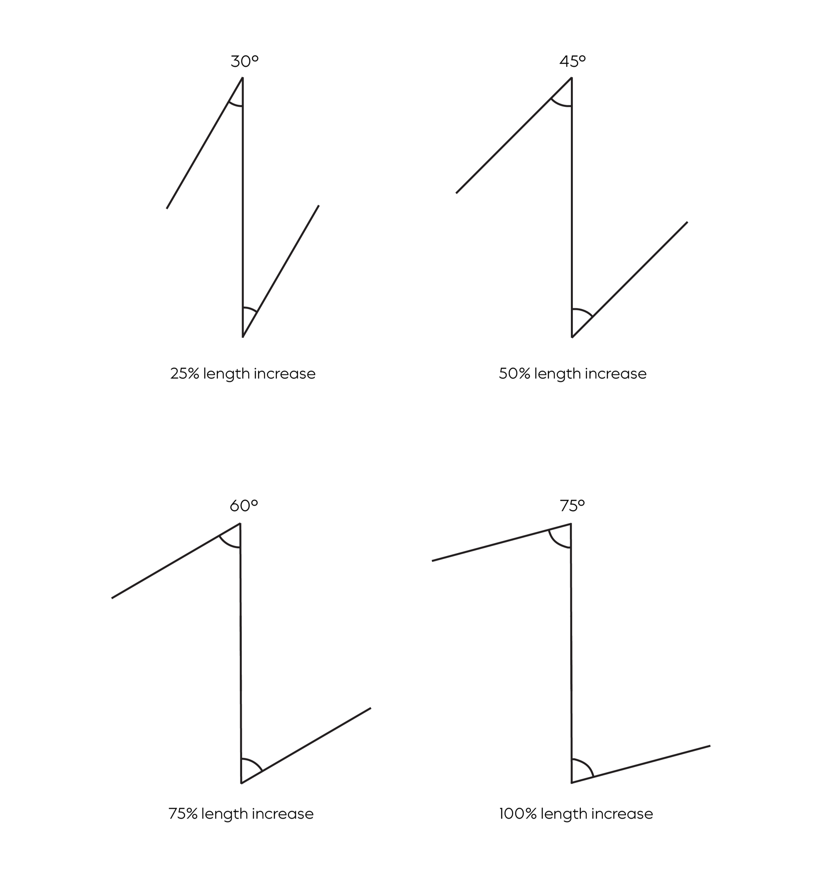

Key Measurements
- Consists of a Z with three limbs of equal length
- Central limb consists of the scar that is to be lengthened or realigned
- Forms two triangular flaps of equal angles
- Achieved using a 60 degree "Z" shape
- Both triangles should have a 60-degree angle from the central limb
- A variety of angles can be achieved
- Central limb rotates by 90 degrees upon closure
- The location of the new scar line can be estimated by drawing a line from one end of the Z to the other
- The angle you choose determines the length you gain
- Face: Central limb length limited to 1 cm or less
- Neck: Central limb length should not exceed 2 cm 